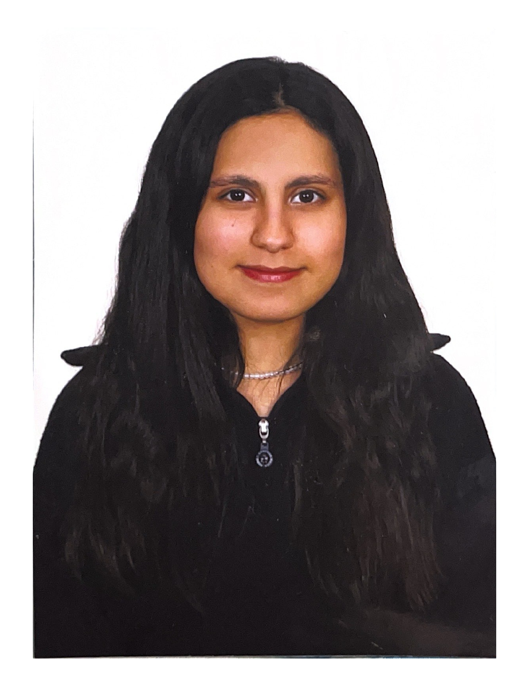

YASMINA BAHLAQUI BEHLAQUI
Programadora | Desarrollo Web | Diseño

Contacto
- Teléfono: 698963816
- Email: yasminabahlagui61@gmail.com
- Dirección: C/Diego Tortosa
- GitHub: YasminaBBh
Perfil
Una chica dispuesta a aprender y superar todos los obstáculos en el camino.
Formación
- Bachillerato de Ciencias (2020 - 2022) - IES Diego Tortosa, Cieza
- Desarrollo de Aplicaciones Web (Bilingüe) (2023 - 2025) - IES Francisco de Goya, Molina de Segura
Experiencia
- Ayudante en campo - Recolecta de oliva
- Cajera en bazar chino
- Encargada de máquinas en Hiper Asia
- Almacén en Alimer (trabajando los veranos desde los 18 años)
Cualidades
- Facilidad en trabajo con equipo
- Movilidad facilitada
- Creativa y trabajadora
Habilidades
- Java, JavaScript, PHP, HTML, SQL, C++, CSS, Bootstrap
- Diseño y Redes Sociales
- Idiomas: Español (Nativo), Inglés (Avanzado), Árabe (Nativo), Francés (Básico)